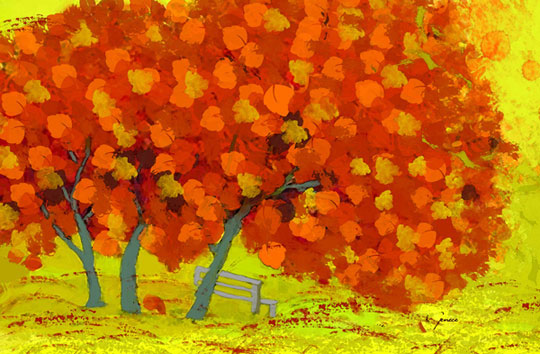

Genece Hamby
Autumn Leaves
 |
|
|
|
(1 of 12) |
 |
|
|
|
(1 of 12) |
Genece Hamby began her passion for digital painting in the late 80's with MacPaint software. She discovered she had a natural talent for drawing and painting on the computer. With no formal art training, it wasn't long before clients in her marketing and branding career hired her for her graphic skills. To sharpen her commercial graphic talents, she consistently learned and practiced new Adobe Photoshop and Corel Paint Shop Pro techniques.Digital painting remained a hobby until two years ago when life handed her a new hand to play. She walked away from her marketing career and has since devoted herself to her greatest passion.
"I think my digital art career actually started at about age 7 or 8 when I was given an Etch-A-Sketch as a gift. I remember spending hours drawing pictures and learning to master curves and other shapes. It was very intuitive for me. 20+ years later, I sold printed circuit boards to Apple for the Mac. Even though I wasn't an employee of Apple, I was spending a lot of time with the R & D team working on the first Mac. It rubbed off! Enough so, that when the Mac came out on the market, I immediately knew how to use it."
As a contemporary digital artist, Genece best expresses herself by giving outward form to inward feelings of stillness, beauty and grace. She is profoundly drawn to introduce a quiet, yet passionate brilliance of color and light. Genece gives way to the sensual, feeling self when fully realized in form that yearns to emerge as something beautiful and soulful.
"Creating art is a natural expression of my soul's deeper message and calling. Each creation is a distinct note from an inner well of beauty and grace that is the essence of who I am."
Today, Genece paints without the use of photographs or scanned images. She uses more than one software program, finding each has something unique to offer. Primarily, she uses Corel Painter X and Adobe Photoshop CS3. Her art shows in several galleries locally and regionally and she teaches digital painting classes.
As a poet: Genece has been expressing herself through poetry for most of her life. For her, it is the language of the soul.
In 1995, Genece published a book of bedroom poetry entitled, "Primal Play". In the same year, her poem, "Will You Play With Me?", was selected as 1 of 33 out of 2500 submitted poems to record to classical music for an album of poetry. Her poem was chosen for its rhythm in sound and word.
Currently, Genece is working on a book of art and poetry, "Sanctuary of Stillness" due out in autumn 2008.